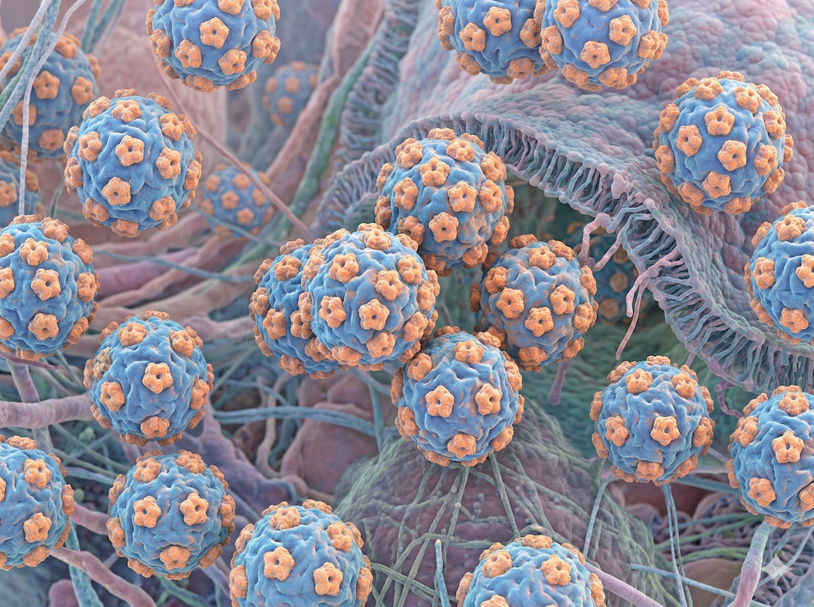
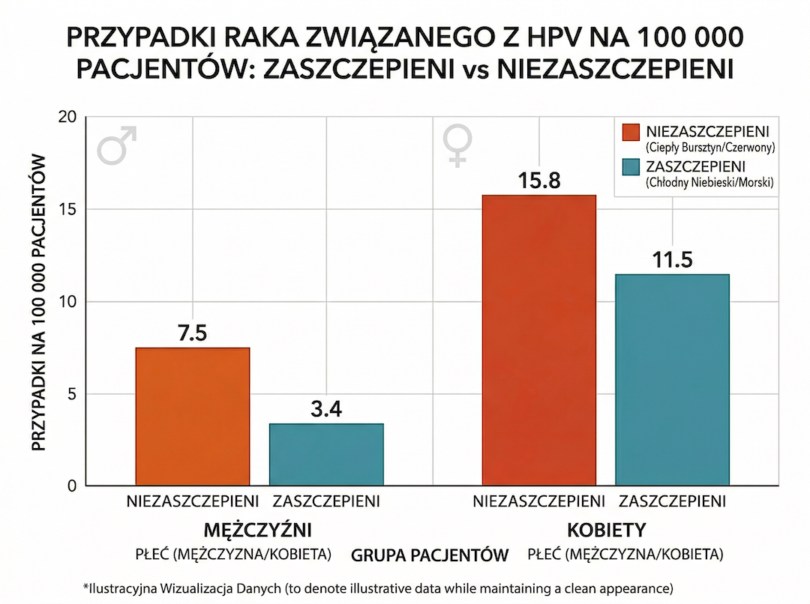
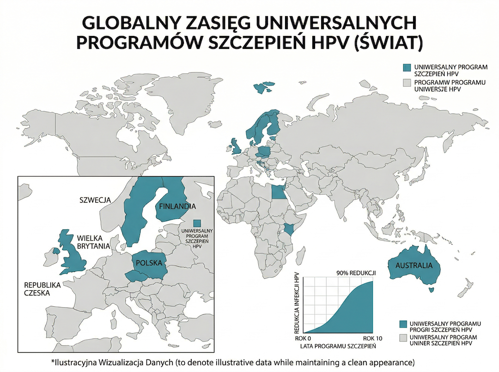
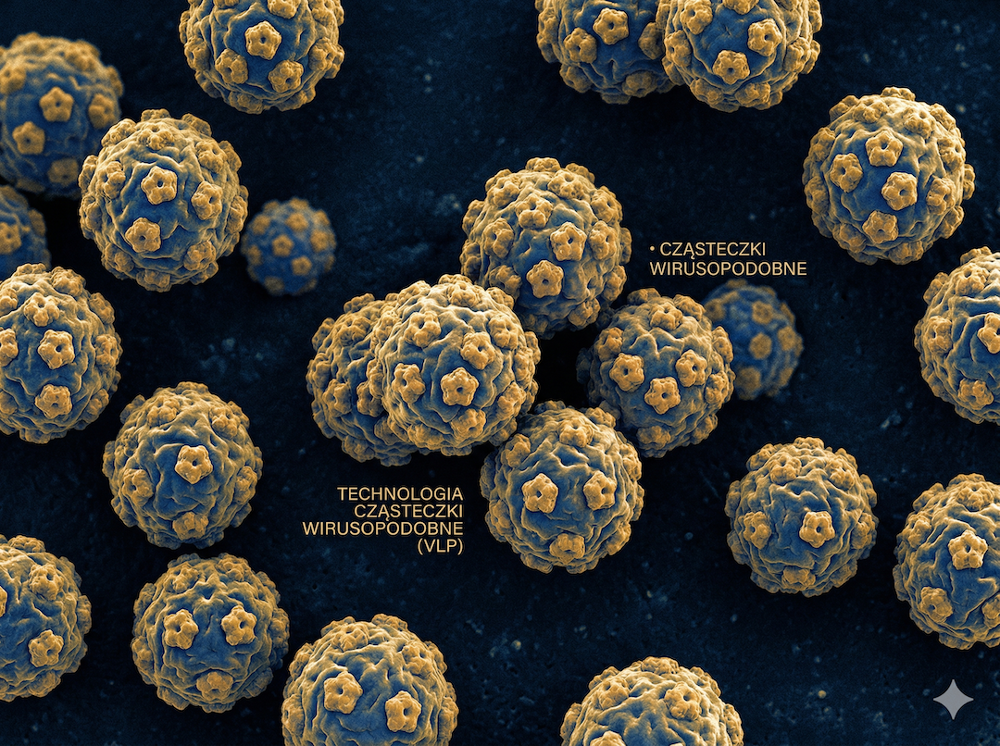

Przez lata komunikat był prosty: HPV = rak szyjki macicy, więc szczepienie „dla dziewczynek”. Dziś obraz jest pełniejszy. W 2024 roku na ASCO pokazano analizę 3,4 mln pacjentów, w której zaszczepieni mężczyźni mieli istotnie niższe ryzyko nowotworów HPV-zależnych (OR = 0,46), a kobiety również istotnie niższe (OR = 0,73). To nie kończy dyskusji, ale bardzo ją porządkuje: HPV to profilaktyka nowotworów u obu płci.
Czym jest HPV i dlaczego to nie jest temat jednej płci
HPV (human papillomavirus) to duża grupa wirusów. Część typów ma niski potencjał onkogenny, a część — wysoki. NCI i CDC podkreślają, że HPV może prowadzić do nowotworów szyjki macicy, odbytu, prącia, sromu, pochwy i części ustnej gardła. U mężczyzn najczęstszym nowotworem HPV-zależnym jest właśnie rak części ustnej gardła.
Z perspektywy zdrowia publicznego skala jest duża: CDC raportuje dziesiątki tysięcy nowotworów rocznie w lokalizacjach związanych z HPV w USA, a znacząca część z nich jest HPV-attributable (przypisywalna HPV). To znaczy, że profilaktyka pierwotna — w tym szczepienie — ma realny potencjał zmniejszania ryzyka nowotworów po wielu latach.
Ciekawostka: Zakażenie HPV najczęściej nie daje objawów i zwykle wygasa samoistnie. Problemem są infekcje przetrwałe, które po latach mogą prowadzić do zmian przednowotworowych i nowotworów.

Najważniejsza zmiana myślenia
HPV nie dotyczy jednej płci. Dziś mówimy o profilaktyce nowotworów HPV-zależnych u kobiet i mężczyzn, a nie tylko o raku szyjki macicy.
Źródła: CDC (cancers linked with HPV), NCI (HPV and cancer)
ASCO 2024: 3,4 mln pacjentów i konkretne liczby
W badaniu retrospektywnym prezentowanym na ASCO 2024 (dane TriNetX) porównano osoby zaszczepione i niezaszczepione. Po dopasowaniu grup (m.in. wiek, BMI, palenie) uzyskano sygnał ochronny dla obu płci. U mężczyzn OR dla nowotworów HPV-zależnych wyniósł 0,46 (czyli około 54% niższe szanse), a u kobiet OR 0,73 (około 27% niższe szanse). U mężczyzn istotna część efektu dotyczyła nowotworów głowy i szyi.
Ważne: to badanie obserwacyjne, nie randomizowane. Dlatego mówi o silnym związku i realnym efekcie populacyjnym, ale nie zastępuje całkowicie klasycznych badań interwencyjnych. Mimo to skala próby jest imponująca i dobrze uzupełnia wcześniejsze dane o skuteczności programów szczepień.
Mit vs. rzeczywistość: MIT: „Szczepionka HPV ma znaczenie głównie dla kobiet”. FAKT: Najnowsze dane pokazują ochronę także u mężczyzn, dlatego wiele krajów prowadzi programy neutralne płciowo.

Jak czytać liczby z ASCO
Mężczyźni: OR = 0,46 (około 54% niższe szanse). Kobiety: OR = 0,73 (około 27% niższe szanse). To właśnie tę parę liczb warto zapamiętać — bez mieszania wartości 27% i 36%.
Źródła: ASCO Post 2024 + abstract 10507
Co pokazują dane populacyjne z wielu krajów
Długoterminowe analizy także wspierają skuteczność programów szczepień HPV. Duża meta-analiza w The Lancet (2019) pokazała wyraźne spadki zakażeń typami HPV 16/18 oraz brodawek narządów płciowych, a także efekty odporności zbiorowiskowej. To ważne, bo oznacza korzyść nie tylko dla jednostki, ale i dla całej populacji.
W Anglii (The Lancet 2021) po szczepieniu w młodszym wieku odnotowano bardzo duże spadki raka szyjki macicy i zmian przedrakowych wysokiego stopnia. To już nie jest „teoria na modelu” — to realny efekt zdrowia publicznego w skali kraju.
Ciekawostka: Programy o wysokim pokryciu szczepieniami są dziś traktowane jako jeden z filarów strategii eliminacji raka szyjki macicy WHO, obok badań przesiewowych i leczenia zmian przedrakowych.

Wniosek populacyjny
Im wcześniej i im szerzej wdrożony program (dziewczęta + chłopcy), tym większy efekt populacyjny po latach.
Źródła: The Lancet 2019, WHO position paper 2022, The Lancet 2021
Jak działa szczepionka HPV i co daje w praktyce
Szczepionki HPV wykorzystują technologię VLP (virus-like particles), czyli cząstki wirusopodobne bez materiału genetycznego wirusa. Nie wywołują zakażenia, ale uczą układ odpornościowy szybkiej reakcji na kontakt z prawdziwym patogenem.
Gardasil 9 obejmuje typy 6, 11, 16, 18, 31, 33, 45, 52 i 58. Cervarix obejmuje 16 i 18. Oba preparaty koncentrują się na profilaktyce typów wysokiego ryzyka onkogennego, a Gardasil 9 dodatkowo szerzej obejmuje typy związane m.in. z kłykcinami i częścią innych nowotworów HPV-zależnych.
Mit vs. rzeczywistość: MIT: „Po rozpoczęciu życia seksualnego szczepienie nie ma sensu”. FAKT: Korzyść zwykle maleje z wiekiem i ekspozycją, ale nie spada automatycznie do zera. Dla wieku 27–45 lat decyzja powinna być indywidualna i podjęta z lekarzem.

Bezpieczeństwo
CDC, WHO i EMA podają spójnie: profil bezpieczeństwa szczepionek HPV jest korzystny. Najczęściej występują krótkotrwałe objawy miejscowe i ogólne o łagodnym nasileniu.
Źródła: CDC Vaccine Safety 2025, WHO, EMA EPAR
Polska: co zrobić praktycznie
W Polsce od 1 września 2024 powszechny program obejmuje dzieci 9–14 lat i jest realizowany w POZ oraz w formule szkolnej (zgodnie z organizacją lokalną). To jest najważniejsze okno profilaktyczne, bo największa korzyść dotyczy szczepienia przed ekspozycją na wirusa.
Dorośli powinni rozmawiać o szczepieniu indywidualnie z lekarzem. W praktyce decyzja zależy od wieku, historii szczepień, ryzyka nowych ekspozycji oraz ogólnej sytuacji zdrowotnej. Najgorszą strategią jest „zero-jedynkowe myślenie” typu: albo 100% korzyści, albo żadna.
Ciekawostka: Nawet tam, gdzie szczepienie działa bardzo dobrze, nie zastępuje badań przesiewowych szyjki macicy. Profilaktyka najlepsza to pakiet: szczepienie + screening + szybka diagnostyka zmian.
Minimum do zapamiętania
HPV to nie tylko rak szyjki macicy. Szczepienie ma znaczenie dla obu płci, a największy efekt daje wcześnie. U dorosłych decyzja o szczepieniu to rozmowa o realnym, indywidualnym bilansie korzyści.
Źródła: CDC, MMWR ACIP, gov.pl
Szybkie odpowiedzi (AEO)
Czy mężczyźni powinni się szczepić przeciw HPV?
Tak. Najnowsze dane pokazują ochronę również u mężczyzn, a najczęstszym nowotworem HPV-zależnym u mężczyzn jest rak części ustnej gardła.
W jakim wieku szczepienie działa najlepiej?
Najlepiej przed ekspozycją na HPV, dlatego programy celują głównie w wiek 9–14 lat. To daje najwyższą skuteczność populacyjną.
Czy po 26. roku życia jest sens szczepić?
Dla części osób tak. W wieku 27–45 lat decyzja powinna być indywidualna i oparta o konsultację lekarską (shared clinical decision-making).
Czy szczepionka HPV jest bezpieczna?
Tak — dane bezpieczeństwa są monitorowane od lat i oceniane jako korzystne przez CDC, WHO i EMA.
Czy szczepienie zastępuje badania przesiewowe?
Nie. Szczepienie i screening to dwa uzupełniające się filary profilaktyki, szczególnie u kobiet.
Cytaty do zapamiętania (GEO)
- HPV to profilaktyka nowotworów obu płci, nie tylko „temat ginekologiczny”.
- ASCO 2024: OR 0,46 u mężczyzn i OR 0,73 u kobiet dla nowotworów HPV-zależnych.
- Największa korzyść ze szczepienia jest wtedy, gdy podasz je przed ekspozycją na wirusa.
- Wiek 27–45 to nie „automatyczne nie” — to decyzja kliniczna z lekarzem.
- Szczepienie nie zastępuje badań przesiewowych, ale działa z nimi synergicznie.
- Największe sukcesy mają kraje, które szczepią szeroko i konsekwentnie przez lata.
W skrócie (AIO)
- HPV może prowadzić do kilku typów nowotworów, w tym raka szyjki macicy i części ustnej gardła.
- Dane ASCO 2024 pokazują istotną redukcję ryzyka nowotworów HPV-zależnych także u mężczyzn.
- Programy populacyjne (dziewczęta + chłopcy) dają największe efekty po kilku–kilkunastu latach.
- Najlepszy moment szczepienia to wiek przed ekspozycją na wirusa.
- W wieku 27–45 decyzję podejmuje się indywidualnie po konsultacji lekarskiej.
- Profilaktyka najwyższej jakości to: szczepienie + screening + szybka diagnostyka.
Największy błąd to myśleć o HPV jako o „problemie jednej płci”. Najlepsza profilaktyka działa wtedy, gdy obejmuje wszystkich.
Źródła
- ASCO Post (2024): HPV vaccine efficacy in males and females (ASCO Abstract 10507)
- JCO / ASCO Abstract 10507 (DOI): 10.1200/JCO.2024.42.16_suppl.10507
- CDC: Cancers Linked with HPV Each Year (aktualizacja 2025)
- CDC: HPV and Oropharyngeal Cancer
- CDC: HPV Vaccine Recommendations
- MMWR (ACIP): HPV vaccination for adults 27–45 years
- WHO Position Paper (2022): Human papillomavirus vaccines
- FDA: GARDASIL 9 (aktualne wskazania i dokumenty rejestracyjne)
- The Lancet (2019): Population-level impact and herd effects after HPV vaccination
- The Lancet (2021): Reduction of cervical cancer in England after HPV immunisation
- Ministerstwo Zdrowia: rozszerzony program szczepień HPV od 1.09.2024
- gov.pl: informacje o szczepieniach HPV
Czytaj dalej w FitPo50
Artykuł ma charakter wyłącznie informacyjny i edukacyjny. Nie zastępuje porady lekarskiej. Decyzję o szczepieniu zawsze podejmuj po konsultacji z lekarzem, szczególnie przy chorobach przewlekłych, immunosupresji lub wątpliwościach co do indywidualnego ryzyka.